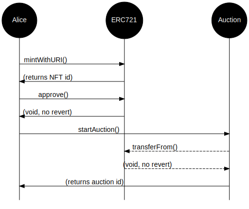

Go up to the CCC HW page (md) | view tabbed version
In this assignment you will write a smart contract, in Solidity, to handle auctions for NFTs. The NFTs will be ERC-721 tokens.
Once deployed to our private Ethereum blockchain, anybody should be able to mint an NFT and then initiate an auction. Anybody could then submit a bid to the auction. To prevent somebody from placing a bid and then not paying, one has to transfer ETH to the smart contract when a bid is placed – it is the transfer of this ETH (along with the associated function call) that actually places the bid. Anybody who is outbid will have their ETH returned, and they can choose (or not) to place a higher bid. Once the auction is completed, the ETH from the winning bid is transferred to the person who initiated the auction (minus some fees), and the NFT is transferred to the winning bidder.
Writing this homework will require completion of the following assignments:
The intent is that you are going to re-use the three NFT images that you created in the Tokens assignment. You can also create new images, if you would like, as long as you follow the guidelines in that assignment (public domain, nothing that will get me in trouble, file naming, in the ipfs/ directory, etc.). As before, in this course, owning the NFT does NOT imply ownership of the image – the assumption is that you don’t actually own the original image, since it’s in the public domain.
You will also need to be familiar with the Ethereum slide set, the Solidity slide set, and the Tokens slide set
In addition to your source code, you will submit an edited version of auction.py (src).
Any changes to this page will be put here for easy reference. Typo fixes and minor clarifications are not listed here. So far there aren’t any significant changes to report.
You are going to create and deploy a decentralized auction smart contract. The contract you will be creating will allow for a decentralized auction for NFTs.
This section is meant as a high-level overview of the process; the detailed specifications are in the next two sections.
nftmanager().
approve() function on the NFT manager, to take control of the NFTAuctioneer contract: call nftmanager() to get the address of the NFT ManagerNFTmanager contract: call mintWithURI() to create the NFTNFTmanager contract: call approve() to allow the Auctioneer to take control of that NFTstartAuction() function, and this involves setting the auction duration, reserve (minimum) price, and various other parameters. If this function does not revert, then the auction will start.
placeBid(), and specifying which auction it is for via a parameter to that function call
closeAuction()
safeTransferFrom() (not transferFrom())unpaidFees() and totalFees() functions; the deployer of the auction smart contract, and ONLY that address, can and collect those fees via a call to collectFees()auctionStartEvent(): when startAuction() is successfully calledauctionCloseEvent(): when closeAuction() is successfully calledhigherBidEvent(): when a new (and higher) bid is placed on an NFT via placebid()This task is to understand the IAuctioneer interface. Formally the task is to develop an Auctioneer contract that implements the following IAuctioneer interface below. The provided IAuctioneer.sol (src) file has more comments for this interface. There is a lot that some of these funcctions have to do, and that is specified in the comments in the IAuctioneer.sol file.
Your contract line must be exactly:
contract Auctioneer is IAuctioneer {The interface is as follows. There are much more detailed comments in the IAuctioneer.sol (src) file.
// SPDX-License-Identifier: GPL-3.0-or-later
pragma solidity ^0.8.16;
import "./IERC165.sol";
interface IAuctioneer is IERC165 {
// Holds the information for each auction
struct Auction {
uint id; // the auction id
uint num_bids; // how many bids have been placed
string data; // a text description of the auction or NFT data
uint highestBid; // the current highest bid, in wei
address winner; // the current highest bidder
address initiator; // who started the auction
uint tokenId; // the NFT token ID
uint endTime; // when the auction started
bool active; // if the auction is active
}
// there needs to be a constructor, but those are never listed in an interface
// the following are just the getter methods for the public variables in the contract
function nftmanager() external view returns (address);
function num_auctions() external view returns (uint);
function totalFees() external view returns (uint);
function unpaidFees() external view returns (uint);
// The following are functions you must create
function auctions(uint _id) external view returns (Auction memory);
function collectFees() external;
function startAuction(uint m, uint h, uint d, string memory data,
uint reserve, uint nftid) external returns (uint);
function closeAuction(uint _id) external;
function placeBid(uint _id) payable external;
function auctionTimeLeft(uint _id) external view returns (uint);
// the three events that needs to be emitted at the appropriate times
event auctionStartEvent(uint indexed _id);
event auctionCloseEvent(uint indexed _id);
event higherBidEvent (uint indexed _id);
// also supportsInterface(), because IAuctioneer inherits from IERC165
}This interface is provided in the IAuctioneer.sol (src) file. This interface extends the IERC165.sol (src) interface, which requires the implementation of a supportsInterface() function – your Auctioneer class thus supports two interfaces (IAuctioneer and IERC165).
For a contract to transfer ETH to another account, you can use code such as the following; this was also discussed in the Solidity slide set. Note that the address to pay to is in variable a, and the value – in wei – is in v:
(bool success, ) = payable(a).call{value: v}("");
require(success, "Failed to transfer ETH");As you are testing it, you will notice in Remix that the button for placeBid() is red – that is because this is a payable function. When you call this function, after setting the correct auction ID as the parameter, you will need to transfer some ETH along with the call. In the deployment pane in Remix, just enter a numerical value in the ‘Value’ box, and select the right denomination (wei, gwei, ether, etc.). That amount of ETH will be transferred along with the function call. If the call reverts, then you get that money back (minus the gas fees, if it tried to send the transaction to the blockchain). If you have a mistake in your function code, you will likely lose that ETH – this is why we are testing this on the Javascript deployment environment in Remix and then on a private blockchain where the ETH has no value.
Test all this thoroughly in Remix! You will need to deploy your Auctioneer contract in Remix’s Javascript environment to test everything working together. Recall that you have to select the right contract to deploy in the “Contract” list, else Remix may not know which one to deploy. Be sure to develop via incremental development, else you will not be able to figure out where your bug is.
One it works, deploy it to our private Ethereum blockchain. You should test it there as well. You will need to submit the contract address of the deployed Auctioneer. If you deploy it multiple times, just submit the most recent contract address. Once it is deployed to our private Ethereum blockchain, you can view it on the auctions page, the URL of which is on the Collab landing page; a link to this will also be shown on the explorer page for your Auctioneer contract. This auctions web page will make it far easier to see what is going on with your auctions. Note that the explorer will only display this link if it knows that the contract implements IAuctioneer, and it only knows that if your supportsInterface() method is written and correct.
startAuction() methodThe startAuction() method requires a bit more explanation. The process is as follows:
approve() the auctioneer contract for her newly minted NFTstartAuction(); as part of this process, the auctioneer will transfer ownership of Alice’s NFT to itself, and revert if it cannot do soBelow is a diagram of the flow of this process.

You should create two auctions in your Auctioneer contract (you’ll create a third one below as well). It’s fine if you create more (such as from testing) – we will only look at the two requested here. These two auctions will use two of your three NFT images. In particular, if you have one NFT that you like more than the others, or is “better”, you will want to save it for the course-wide auction, below.
Note that you can perform these calls through Remix (via calling an external contract, as described in the dApp introduction (md) assignment) or through geth calls (as described in the Solidity slide set).
The first one should be an auction that has fully ended by due date/time of the assignment. Basically, we want it to be a closed auction. There should be a few bids on this auction. You can create multiple accounts for this – just call personal.newAccount() a few more times – each account is in the eth.accounts list, and you will have to unlock each one with personal.unlockAccount(). To get ether into those other accounts you can:
You can also get classmates to bid on your auction, although that is not required. This auction will use the first of your (three) NFTs. You will be submitting the auction ID for this auction as well as the NFT token ID.
You SHOULD call closeAuction() on this auction.
The second auction should end two weeks after the assignment is due. Just get it on the day two weeks later – we don’t really care about the time, as long as the date is 14 days after the assignment due date. Basically, we want to see an active auction. This, also, should have a few bids on it. This auction use the second of your (three) NFTs. You will be submitting the auction ID for this auction as well as the NFT token ID.
There is a web page to view your auctions, and the URL for it is on the Collab landing page. You can also get a link to it from the explorer page for your deployed smart contract. This can be used to view any auction smart contract that implements the IAuctioneer interface. This means you can view the class auctions as well (which are done in the next section).
You are going to participate in a class-wide auction manager.
We have deployed an auction manager, and the contract address for that Auctioneer contract is on the Collab landing page. As above, you can perform these calls through Remix (via calling an external contract, as described in the dApp introduction (md) assignment) or through geth calls (as described in the Solidity slide set).
You should use the third of your (three) NFTs. You should create an auction that ends one week after the due date of the assignment (again, we are looking for the day – we don’t care too much about the time of day). You will need to submit the auction ID from the auction you created as well as the NFT token ID. YOUR RESERVE should be no higher than 5 ETH.
Lastly, bid on at least three auctions that are not your own. Depending on when you submit your assignment, there may not be any (or any interesting) auctions available to bid on. That’s fine – you don’t have to have those bids completed by the time the assignment is due; you have an extra few days to place your bids. We are going to judge lateness on this assignment by the Gradescope submission time, and the information you have to submit does not include the transaction hashes of the bids. We are going to check whether you bid on the auctions by looking if your eth.coinbase account, the address of which you will submit below, initiated bids on any one of your classmate’s submitted NFT manager addresses by two days after the due date. Note that you have to place the bid via Remix or geth; the course website just displays the auctions.
MAKE YOUR BIDS REASONABLE!!! If the current highest bid is 0.5 ETH, don’t suddenly bid 5,000 ETH. Doing so is going to require others who need to bid on that NFT to have to obtain a lot more ETH, which will increase the blockchain size and the difficulty, which will make it harder for everybody else in the class. This will make me very cranky. Any successive bid should be no more than about 1 ETH more than the previous bid.
startAuction(), only one of the time parameters must be non-zero.safeTransferFrom() instead of transferFrom() (see here for details)block.timestamp – it returns a UNIX timestamp. Likely you should keep track of all your times this way. You can search online for UNIX timestamp converters, if you need them. Note that the now keyword, which was used in lieu of block.timestamp, is deprecated, and you should use block.timestamp instead.You will need to fill in the various values from this assignment into the auction.py (src) file. That file clearly indicates all the values that need to be filled in. That file, along with your Solidity source code, are the only files that must be submitted. The sanity_checks dictionary is intended to be a checklist to ensure that you perform the various other requirements to ensure this assignment is fully submitted.
There are three forms of submission for this assignment; you must do all three.
Submission 1: You must deploy you Auctioneer smart contract (which will deploy its own NFTmanager contract) to our private Ethereum blockchain. It’s fine if you deploy it a few times to test it. But the final deployment for the Auctioneer should only have the auctions specified in task 3, above. Save the contract addresses of that deployment, as it will go in the auction.py file that you submit below.
Submission 2: You have to create a number of auctions: two in your auction manager, and one in the course-wide auction manager. These have specific close dates, and there should be multiple bids on the first two. This is detailed in tasks 3 and 4, above.
Submission 3: You should submit your Auctioneer.sol file and your completed auction.py file, and ONLY those two files, to Gradescope. All your Solidity code should be in that first file, and you should specifically import the various interfaces. Those interface files will be placed in the same directory on Gradescope when you submit. NOTE: Gradescope cannot fully test this assignment, as it does not have access to the private blockchain. So it can only do a few sanity tests (correct files submitted, successful compilation, valid values in auction.py, etc.).